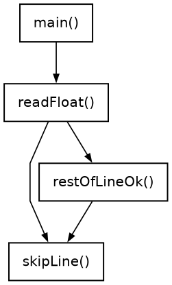
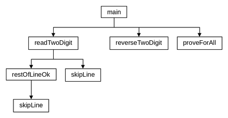

← До переліку лабораторних робіт
Лабораторна робота №1. Типи даних. Функції введення-виведення. Обчислення виразів
Варіант 19. Виконав: Одарчук Олексій, КНУ імені Тараса Шевченка, ФІТ, група ІПЗ-11. C17, gcc / C++17, g++
1. Мета роботи
-
Вивчити особливості використання вбудованих типів даних:
char,int,long,short,float,double,unsigned char,unsigned int,unsigned long. - Вивчити особливості використання функцій введення-виведення.
- Навчитися застосовувати стандартні математичні функції.
2. Умова задачі
Завдання 1
За даними, введеними з клавіатури, обчислити значення виразу і вивести результат на екран (таблиця 1.7, варіант 19):
X = (A·cos²B + 1)^(1/2) · ln(C) / D
Завдання 2
Нехай число ab містить цифри a і b. Довести, що
число ab + ba ділиться на 11 (таблиця 1.8, варіант 19).
3. Аналіз задачі та теоретичне обґрунтування
Завдання 1
Вираз обчислюється стандартними математичними функціями заголовного файла
<math.h>: cosf(), sqrtf(),
logf() для типу float. Піднесення до степеня 1/2 реалізовано як
квадратний корінь.
Область визначення виразу обмежена трьома умовами, які перевіряються до обчислення:
C > 0- аргумент натурального логарифма;D ≠ 0- знаменник дробу;A·cos²B + 1 ≥ 0- підкореневий вираз.
При A < -1 і cos²B, близькому до одиниці, підкореневий вираз
стає від'ємним, тому третя умова потрібна. Кут B задається в радіанах.
Контроль введення (функція readFloat()): приймаються лише скінченні дійсні
числа, тому nan та inf відхиляються; після числа в рядку
допускаються тільки пропуски або наступне число (усі чотири значення можна ввести в одному
рядку), а сторонні символи на кшталт 2abc призводять до повторного запиту.
При вичерпанні вхідних даних програма повідомляє про це й завершується з кодом
RC_INPUT_EXHAUSTED; для невизначеного виразу, а також коли значення виразу
виходить за межі типу float (наприклад, за дуже малого D), код завершення
RC_UNDEFINED.
Завдання 2
Аналітичне доведення. Двоцифрове число у позиційній десятковій системі має значення:
ab = 10·a + b, ba = 10·b + a ab + ba = (10a + b) + (10b + a) = 11a + 11b = 11·(a + b)
Сума є добутком числа 11 на ціле число (a + b), отже ділиться на 11 без
остачі, причому частка дорівнює сумі цифр числа. Що й треба було довести.
Програма підтверджує доведення обчислювально: функція proveForAll() перевіряє
тотожність для всіх двоцифрових чисел (a = 1...9, b = 0...9,
разом 90 чисел). Введення числа (readTwoDigit()) контролюється так само, як у
завданні 1: число має лежати в межах 10...99, а після нього в рядку не повинно бути
сторонніх символів (47.9 або 47abc відхиляються).
Вибір типів даних
| Змінні | Тип | Чому |
|---|---|---|
вихідні дані a, b, c, d;
проміжні cosB, radicand, root,
lnC; результат x (завдання 1)
|
float |
результат виводиться з 6 знаками після коми, а float зберігає 6-7
значущих цифр; математичні функції взято у варіанті для float
|
число n, цифри a, b, число ba,
сума sum (завдання 2)
|
short |
n не більше 99, найбільша сума 99 + 99 = 198 |
символ c у skipLine() і restOfLineOk();
scanned
|
int |
getchar(), peek() і scanf() повертають
int, зокрема значення EOF, яке не є символом
|
Коди завершення (RC_INPUT_EXHAUSTED, RC_UNDEFINED) мають тип
int, бо це значення, яке повертає main().
Література: Ковалюк Т.В. Алгоритмізація та програмування. - Львів.: "Магнолія 2006", 2024. - 400 с.; Deitel P., Deitel H. C++ How to Program. Pearson Education, Inc. Hoboken, New Jersey. 2017. - 3015 p.
4. Блок-схема алгоритму


HIPO-діаграма показує ієрархію викликів функцій: зверху головна функція main(), стрілки ведуть до функцій, які вона викликає, нижче - функції, що викликаються з них; петля біля функції означає рекурсивний виклик. Діаграму побудовано за текстом програми.


Схеми побудовано за текстами програм у rombik (rombik.app) відповідно до ДСТУ 19.701-90 (ISO 5807). Структура кожної схеми точно відповідає коду функції, а блоки описують дії словами, як у методичних вказівках, без фрагментів коду.
5. Текст програми
Завдання 1 - task1.c
/*==============================================================================
task1.c. Лабораторна робота №1. Завдання 1. Варіант 19.
Тема: типи даних, функції введення-виведення, обчислення виразів.
Умова: за даними, введеними з клавіатури, обчислити значення виразу
X = (A*cos^2(B) + 1)^(1/2) * ln(C) / D
та вивести результат на екран.
Метод: вираз обчислюється безпосередньо за допомогою стандартних
математичних функцій cosf(), sqrtf(), logf() з <math.h>
над дійсними числами типу float.
Перед обчисленням перевіряються обмеження області визначення:
C > 0 (аргумент натурального логарифма);
D != 0 (дільник);
A*cos^2(B) + 1 >= 0 (підкореневий вираз).
Введення-виведення: форматні функції scanf()/printf() з <stdio.h>
(демонстрація потокового введення-виведення - у завданні 2).
Виконав: Одарчук Олексій, КНУ імені Тараса Шевченка, ФІТ, група ІПЗ-11.
Компілятор: gcc -std=c17
==============================================================================*/
#include <stdio.h>
#include <stdbool.h>
#include <ctype.h>
#include <math.h>
/* Коди завершення програми. */
enum ExitCode
{
RC_OK = 0, //результат обчислено
RC_INPUT_EXHAUSTED = 1, //вхідні дані вичерпано (EOF)
RC_UNDEFINED = 2 //вираз не визначено для введених даних
};
//========= skipLine: відкинути залишок рядка введення разом із символом '\n' ==========
/*
skipLine - відкинути залишок рядка введення разом із символом '\n'.
*/
void skipLine(void)
{
int c = getchar(); //поточний символ введення
while (c != '\n' && c != EOF) //пропускати символи до кінця рядка
{
c = getchar(); //прочитати наступний символ
}
}
//======= restOfLineOk: перевірити залишок рядка після успішно прочитаного числа =======
/*
restOfLineOk - перевірити залишок рядка після успішно прочитаного числа.
Припустимі лише пропуски до кінця рядка або до наступного числа (тоді воно
лишається в буфері для наступного запиту). Будь-який інший символ - помилка,
і решта рядка відкидається.
Повертає: true - залишок рядка коректний;
false - у рядку є сторонні символи (рядок відкинуто).
Локальні змінні:
c - черговий символ рядка.
*/
bool restOfLineOk(void)
{
int c = getchar(); //черговий символ рядка
while (c == ' ' || c == '\t' || c == '\r') //пропускати пропуски в рядку
{
c = getchar(); //прочитати наступний символ
}
if (c == '\n' || c == EOF) //якщо рядок закінчився
{
return true; //повернути ознаку коректності
}
if (isdigit(c) || c == '-' || c == '+') //якщо почалося наступне число
{
ungetc(c, stdin); //повернути символ у буфер
return true; //повернути ознаку коректності
}
skipLine(); //відкинути решту рядка
return false; //повернути ознаку помилки
}
//==== readFloat: прочитати одне дійсне число з клавіатури з контролем коректності =====
/*
readFloat - прочитати одне дійсне число з клавіатури з контролем коректності.
Приймаються лише скінченні числа (nan та inf відхиляються); після числа
в рядку не повинно бути сторонніх символів.
Параметри:
prompt [вхідний] - текст запрошення, що виводиться користувачеві;
value [вихідний] - адреса змінної, куди буде записано введене число.
Повертає: true - число успішно прочитано;
false - досягнуто кінця вхідного потоку (EOF).
Локальні змінні:
scanned - результат scanf(): кількість прочитаних значень або EOF.
*/
bool readFloat(const char *prompt, float *value)
{
for (;;) //повторювати до коректного введення
{
printf("%s", prompt); //вивести запрошення
const int scanned = scanf("%f", value); //результат введення числа
if (scanned == EOF) //якщо вхідні дані вичерпано
{
return false; //повернути ознаку кінця даних
}
if (scanned == 0 || !isfinite(*value)) //якщо введено не число
{
skipLine(); //відкинути помилковий рядок
}
else if (restOfLineOk()) //інакше якщо залишок рядка коректний
{
return true; //повернути ознаку успіху
}
//вивести повідомлення про помилку
printf("Помилка: очікується дійсне число. Спробуйте ще раз.\n");
}
}
//================================ головна функція main ================================
/*
Головна функція. Організовує введення вихідних даних, перевірку області
визначення виразу та виведення результату.
Локальні змінні:
a, b, c, d - вихідні дані, введені з клавіатури;
cosB - проміжне значення cos(B);
radicand - підкореневий вираз A*cos^2(B) + 1;
root - квадратний корінь з підкореневого виразу;
lnC - значення ln(C);
x - шукане значення виразу.
*/
int main(void)
{
float a = 0.0f; //коефіцієнт A виразу
float b = 0.0f; //кут B у радіанах
float c = 0.0f; //аргумент логарифма C
float d = 0.0f; //дільник D
printf("Лабораторна робота №1, завдання 1 (варіант 19)\n"); //вивести назву роботи
printf("Виконав: студент групи ІПЗ-11 Одарчук Олексій\n"); //вивести дані виконавця
//вивести обчислюваний вираз
printf("Обчислення виразу X = sqrt(A*cos^2(B) + 1) * ln(C) / D\n");
//вивести обмеження на дані
printf("Кут B задається в радіанах, C > 0, D != 0.\n\n");
//якщо не вдалося ввести дані
if (!readFloat("Уведіть A = ", &a) || !readFloat("Уведіть B (радіани) = ", &b) ||
!readFloat("Уведіть C = ", &c) || !readFloat("Уведіть D = ", &d))
{
printf("\nВхідні дані вичерпано.\n"); //повідомити про кінець даних
return RC_INPUT_EXHAUSTED; //завершити з кодом помилки
}
//вивести введені дані
printf("\nВихідні дані: A = %.6f B = %.6f C = %.6f D = %.6f\n", a, b, c, d);
/* Перевірка області визначення виразу. */
if (c <= 0.0f) //якщо C не додатне
{
//повідомити про помилку
printf("Вираз не визначено: ln(C) існує лише при C > 0.\n");
return RC_UNDEFINED; //завершити: вираз не визначено
}
if (d == 0.0f) //якщо дільник дорівнює нулю
{
//повідомити про ділення на нуль
printf("Вираз не визначено: ділення на нуль (D = 0).\n");
return RC_UNDEFINED; //завершити: вираз не визначено
}
const float cosB = cosf(b); //обчислити cos(B)
const float radicand = a * cosB * cosB + 1.0f; //обчислити підкореневий вираз
if (radicand < 0.0f) //якщо підкореневий вираз від'ємний
{
printf("Вираз не визначено: підкореневий вираз A*cos^2(B)+1 = %.6f < 0.\n",
radicand); //вивести повідомлення про помилку
return RC_UNDEFINED; //завершити: вираз не визначено
}
const float root = sqrtf(radicand); //обчислити квадратний корінь
const float lnC = logf(c); //обчислити ln(C)
const float x = root * lnC / d; //обчислити значення виразу X
/* Проміжні результати виводяться для перевірки достовірності обчислень.
Шість знаків після коми відповідають точності типу float. */
printf("\nПроміжні результати:\n"); //вивести проміжні результати
printf(" cos(B) = %.6f\n", cosB); //вивести cos(B)
printf(" cos^2(B) = %.6f\n", cosB * cosB); //вивести cos^2(B)
printf(" A*cos^2(B) + 1 = %.6f\n", radicand); //вивести підкореневий вираз
printf(" sqrt(...) = %.6f\n", root); //вивести квадратний корінь
printf(" ln(C) = %.6f\n", lnC); //вивести ln(C)
if (!isfinite(x)) //якщо сталося переповнення
{
//повідомити про переповнення
printf("\nЗначення виразу виходить за межі типу float.\n");
return RC_UNDEFINED; //завершити з кодом помилки
}
printf("\nРезультат: X = %.6f\n", x); //вивести результат
return RC_OK; //завершити успішно
}
Завдання 2 - task2.cpp
/*==============================================================================
task2.cpp. Лабораторна робота №1. Завдання 2. Варіант 19.
Тема: типи даних, функції введення-виведення, обчислення виразів.
Умова: нехай число ab містить цифри a і b. Довести, що число ab + ba
ділиться на 11.
Аналіз задачі (аналітичне обґрунтування).
Двоцифрове число ab у позиційній десятковій системі має значення
ab = 10*a + b,
а число, записане тими самими цифрами у зворотному порядку,
ba = 10*b + a.
Тоді
ab + ba = (10a + b) + (10b + a) = 11a + 11b = 11*(a + b).
Отже сума є добутком числа 11 на ціле число (a + b), тобто ділиться
на 11 без остачі, причому частка дорівнює сумі цифр. Що й треба було
довести.
Метод програмної перевірки: програма
1) обчислює ab + ba для введеного користувачем числа і показує
покроково всі складові тотожності;
2) виконує вичерпну перевірку тотожності для ВСІХ двоцифрових чисел
(a = 1..9, b = 0..9) - обчислювальне підтвердження доведення.
Введення-виведення: об'єкти класів потоків std::cin / std::cout
(форматне введення-виведення scanf/printf застосовано в завданні 1).
Виконав: Одарчук Олексій, КНУ імені Тараса Шевченка, ФІТ, група ІПЗ-11.
Компілятор: g++ -std=c++17
==============================================================================*/
#include <iostream>
#include <limits>
#include <cctype>
/* Код завершення: вхідні дані вичерпано (EOF). */
const int RC_INPUT_EXHAUSTED = 1; //код завершення при EOF
//============= reverseTwoDigit: побудувати число з переставленими цифрами =============
/*
reverseTwoDigit - побудувати число з переставленими цифрами.
Параметри:
n [вхідний] - двоцифрове число ab (10..99).
Повертає: число ba = 10*b + a.
Локальні змінні:
a - цифра десятків числа n;
b - цифра одиниць числа n.
*/
short reverseTwoDigit(short n)
{
const short a = n / 10; //цифра десятків
const short b = n % 10; //цифра одиниць
return 10 * b + a; //повернути число ba
}
//======= proveForAll: вичерпна перевірка тотожності ab + ba = 11*(a+b) для всіх =======
/*
proveForAll - вичерпна перевірка тотожності ab + ba = 11*(a+b) для всіх
двоцифрових чисел (їх 90: цифра десятків 1..9, одиниць 0..9).
Повертає: true - тотожність виконується для всіх двоцифрових чисел;
false - знайдено контрприклад.
Локальні змінні:
a, b - цифри числа;
ab, ba - саме число та число з переставленими цифрами;
sum - їх сума.
*/
bool proveForAll()
{
for (short a = 1; a <= 9; ++a) //перебрати цифри десятків
{
for (short b = 0; b <= 9; ++b) //перебрати цифри одиниць
{
const short ab = 10 * a + b; //двоцифрове число ab
const short ba = 10 * b + a; //число ba з переставленими цифрами
const short sum = ab + ba; //сума ab + ba
if (sum % 11 != 0 || sum / 11 != a + b) //якщо тотожність порушено
{
return false; //контрприклад
}
}
}
return true; //повернути ознаку істинності
}
//========= skipLine: відкинути залишок рядка введення разом із символом '\n' ==========
/*
skipLine - відкинути залишок рядка введення разом із символом '\n'.
*/
void skipLine()
{
//відкинути символи до кінця рядка
std::cin.ignore(std::numeric_limits<std::streamsize>::max(), '\n');
}
//======= restOfLineOk: перевірити залишок рядка після успішно прочитаного числа =======
/*
restOfLineOk - перевірити залишок рядка після успішно прочитаного числа.
Припустимі лише пропуски до кінця рядка або до наступного числа (тоді воно
лишається в потоці для наступного запиту). Будь-який інший символ - помилка,
і решта рядка відкидається.
Повертає: true - залишок рядка коректний;
false - у рядку є сторонні символи (рядок відкинуто).
Локальні змінні:
c - черговий символ рядка (без вилучення з потоку).
*/
bool restOfLineOk()
{
int c = std::cin.peek(); //черговий символ рядка
while (c == ' ' || c == '\t' || c == '\r') //пропускати пропуски в рядку
{
std::cin.get(); //вилучити пропуск з потоку
c = std::cin.peek(); //переглянути наступний символ
}
if (c == '\n') //якщо рядок закінчився
{
std::cin.get(); //вилучити символ кінця рядка
return true; //повернути ознаку коректності
}
//якщо кінець даних або число
if (c == std::char_traits<char>::eof() || std::isdigit(c) || c == '-' || c == '+')
{
return true; //повернути ознаку коректності
}
skipLine(); //відкинути решту рядка
return false; //повернути ознаку помилки
}
//===== readTwoDigit: прочитати двоцифрове число з контролем коректності введення ======
/*
readTwoDigit - прочитати двоцифрове число з контролем коректності введення.
Якщо введено не число, після числа є сторонні символи або число поза
межами 10..99, прапорець помилки потоку знімається, залишок рядка
відкидається і запит повторюється.
Параметри: n [вихідний] - змінна для введеного числа.
Повертає : true - число прочитано; false - вхідні дані вичерпано.
*/
bool readTwoDigit(short &n)
{
std::cout << "Уведіть двоцифрове число ab (10..99): "; //вивести запрошення
for (;;) //повторювати до коректного введення
{
if (std::cin >> n) //якщо число прочитано
{
if (restOfLineOk() && n >= 10 && n <= 99) //якщо рядок і діапазон коректні
{
return true; //повернути ознаку успіху
}
}
else //інакше (введено не число)
{
if (std::cin.eof()) //якщо вхідні дані вичерпано
{
return false; //повернути ознаку кінця даних
}
std::cin.clear(); //зняти прапорець помилки
skipLine(); //відкинути помилковий рядок
}
//вивести повідомлення про помилку
std::cout << "Помилка: потрібне ціле число від 10 до 99. Повторіть: ";
}
}
//================================ головна функція main ================================
/*
Головна функція. Читає двоцифрове число, демонструє тотожність на ньому
та виконує вичерпну перевірку.
Локальні змінні:
n - введене двоцифрове число ab;
a, b - його цифри;
ba - число з переставленими цифрами;
sum - сума ab + ba.
*/
int main()
{
std::cout << "Лабораторна робота №1, завдання 2 (варіант 19)\n"
"Виконав: студент групи ІПЗ-11 Одарчук Олексій\n"
"Доведення: ab + ba ділиться на 11\n"
<< std::endl; //вивести назву роботи
short n = 0; //двоцифрове число ab
if (!readTwoDigit(n)) //якщо не вдалося ввести число
{
//повідомити про кінець даних
std::cout << "\nВхідні дані вичерпано." << std::endl;
return RC_INPUT_EXHAUSTED; //завершити з кодом помилки
}
const short a = n / 10; //цифра десятків a
const short b = n % 10; //цифра одиниць b
const short ba = reverseTwoDigit(n); //число ba
const short sum = n + ba; //сума ab + ba
//вивести цифри числа
std::cout << "\nЦифри числа: a = " << a << ", b = " << b << std::endl;
//вивести розклад числа ab
std::cout << " ab = 10*a + b = 10*" << a << " + " << b << " = " << n << std::endl;
//вивести розклад числа ba
std::cout << " ba = 10*b + a = 10*" << b << " + " << a << " = " << ba << std::endl;
//вивести суму ab + ba
std::cout << " ab + ba = " << n << " + " << ba << " = " << sum << std::endl;
std::cout << " 11*(a + b) = 11*(" << a << " + " << b << ") = " << 11 * (a + b)
<< std::endl; //вивести значення 11*(a + b)
std::cout << " " << sum << " / 11 = " << sum / 11 << ", остача = " << sum % 11
<< std::endl; //вивести частку й остачу
if (sum % 11 == 0) //якщо сума ділиться на 11
{
//повідомити про подільність
std::cout << "\nСума ділиться на 11 без остачі." << std::endl;
}
else //якщо сума не ділиться
{
//повідомити про неподільність
std::cout << "\nСума НЕ ділиться на 11." << std::endl;
}
//вивести заголовок перевірки
std::cout << "\nВичерпна перевірка тотожності ab + ba = 11*(a + b):" << std::endl;
if (proveForAll()) //перевірити всі двоцифрові числа
{
std::cout << "Перевірено випадків: 90 - тотожність виконується для всіх "
"двоцифрових чисел.\n"; //вивести підсумок перевірки
}
else //якщо знайдено контрприклад
{
//повідомити про контрприклад
std::cout << "Знайдено контрприклад - тотожність хибна." << std::endl;
}
return 0; //завершити успішно
}
6. Результати виконання роботи
Компіляція: make (gcc -std=c17 та g++ -std=c++17,
прапорці -Wall -Wextra -pedantic -O2). Попереджень компілятора немає.
Нижче наведено екранні копії повних прогонів програм: кожна починається з запуску програми, містить усе введення з клавіатури й увесь вивід до завершення роботи. Прогін, що не вміщується на один екран, подано кількома послідовними частинами. Протоколи всіх прогонів, зокрема додаткових наборів вхідних даних, винесено окремими файлами за посиланнями.

Повний протокол виконання (task1.txt) (повний протокол, 81 рядків)

Повний протокол виконання (task2.txt) (повний протокол, 77 рядків)
7. Аналіз достовірності результатів
Достовірність результатів перевірено аналітичним розрахунком і обчисленнями на калькуляторі. Для кожної контрольної величини поруч із розрахунком наведено результат програми.
Перевірка розрахунків на калькуляторі
Нижче наведено екранні копії обчислень у калькуляторі WolframAlpha; поруч із кожною - результат програми.

Калькулятор: 1,5230168822...; програма: 1,5230168822. Значення збігаються.

Калькулятор: 121; програма: 121, і 11·(4+7) = 121. Значення збігаються.
Завдання 1
Достовірність перевірено на контрольних наборах, значення яких обчислюються аналітично.
| Набір даних | Аналітичний розрахунок | Результат програми |
|---|---|---|
| A=3, B=π/3, C=10, D=2 |
cos(π/3)=0,5; 3·0,25+1=1,75; √1,75=1,32287566; ln10=2,30258509; X = 1,32287566·2,30258509/2 = 1,52301688 |
1,523017 - збіг до всіх виведених цифр |
| A=0, B=0, C=e, D=1 | √(0+1)·ln(e)/1 = 1·1/1 = 1,0000000 | 1,000000 - збіг точний |
| A=1, B=0, C=-5, D=2 | ln(-5) не існує | Повідомлення "Вираз не визначено: ln(C) існує лише при C > 0" |
Аргумент B уведено як наближення π/3 ≈ 1,0471975512 і збережено в типі float
(6-7 значущих цифр). Похибка наближення та округлення не впливає на шість виведених знаків
після коми, тому результат програми збігається з аналітичним значенням до всіх виведених
цифр.
Завдання 2
| n | ab + ba | 11·(a+b) | Остача від ділення на 11 |
|---|---|---|---|
| 47 | 47 + 74 = 121 | 11·11 = 121 | 0 |
| 10 | 10 + 1 = 11 | 11·1 = 11 | 0 |
| 99 | 99 + 99 = 198 | 11·18 = 198 | 0 |
Обчислені значення збігаються з ручним розрахунком; перебір усіх 90 двоцифрових чисел контрприкладів не виявив.
8. Висновки
-
Для обчислення виразу застосовано тип
floatі стандартні математичні функціїcosf(),sqrtf(),logf(); цілі величини завдання 2 зберігаються в типіshort. -
Опрацьовано два способи введення-виведення:
scanf()/printf()(завдання 1) та потокиstd::cin/std::cout(завдання 2). - Реалізовано контроль введення та перевірку області визначення виразу.
-
Тотожність
ab + ba = 11·(a + b)доведено аналітично й підтверджено перебором усіх двоцифрових чисел. - Обидва завдання варіанта виконано в повному обсязі.